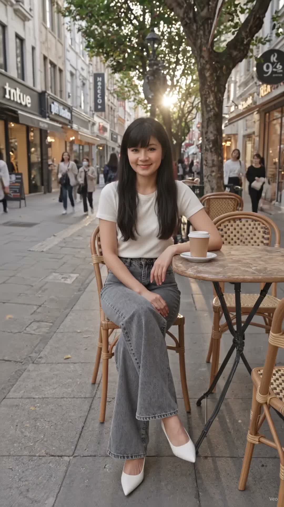
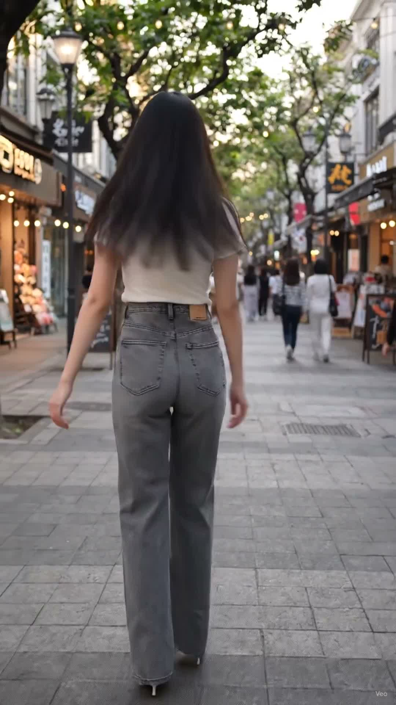

Quần jeans ống suông BLee xám: mặc đi chơi cuối tuần, dáng nhỏ vẫn cao ráo

Sáng Chủ nhật đi chơi, Lisa chọn quần jeans ống suông BLee màu xám: áo thun trắng tay ngắn + quần jeans ống suông xám dài chạm gót + giày trắng mũi nhọn. Jeans ống suông, cạp cao — đi phố mua sắm hay ngồi café ngoài trời đều thoải mái mà vẫn cao ráo.
Đọc trước khi mua: bài viết này là gợi ý phối đồ lấy cảm hứng từ mẫu quần jeans ống suông đang bán chạy trên Shopee. Lisa là nhân vật AI, nên bài viết không phải bài đánh giá sản phẩm Lisa đã mặc thật hay đã dùng thử. Giá, chất liệu và size cần kiểm tra lại trên trang bán trước khi mua. Link mua hàng (affiliate — mua qua link, Lisa Style có thể nhận một khoản hoa hồng nhỏ mà giá bạn trả không đổi): Quần jeans ống suông BLee xám — 157.250đ, đã bán 10k+.
Cùng một set trắng — xám, nhìn lúc đi bộ trên phố mua sắm, lúc ngồi café ngoài trời và lúc cười duyên sẽ khác nhau — xem đủ 3 góc rồi hãy quyết có hợp với bạn không:

Đi bộ phố mua sắm — nhìn từ phía sau, ống suông dài chạm gót